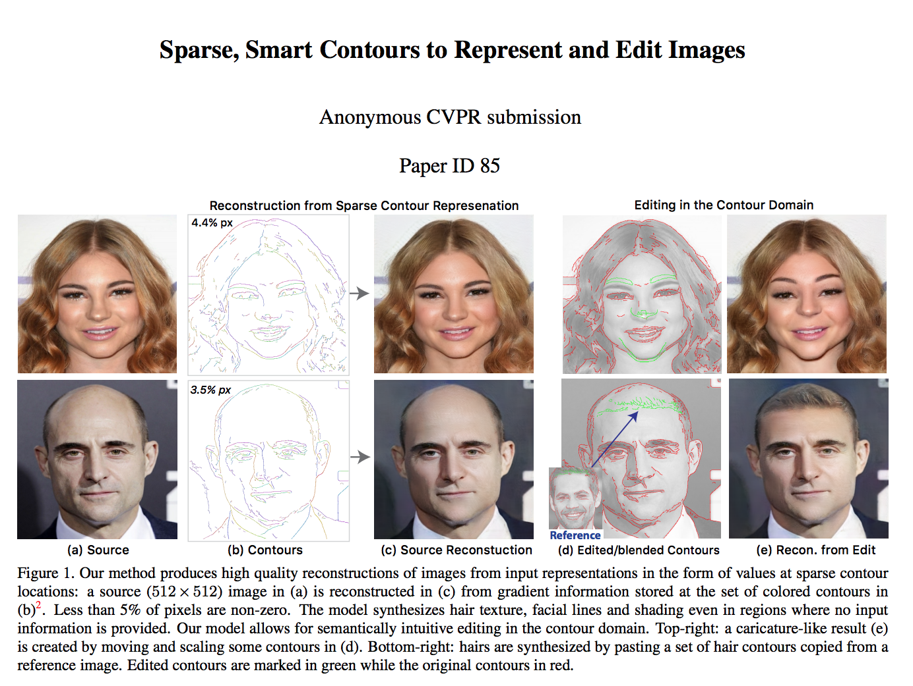

| Tali Dekel | Chuang Gan | Dilip Krishnan | Ce Liu |
| Google Research |
 |
| Our method produces high quality reconstructions of images from input representations in the form of values at sparse contour locations: a source (512x512) image in (a) is reconstructed in (c) from gradient information stored at the set of colored contours in (b). Less than 5% of pixels are non-zero. The model synthesizes hair texture, facial lines and shading even in regions where no input information is provided. Our model allows for semantically intuitive editing in the contour domain. Top-right: a caricature-like result (e) is created by moving and scaling some contours in (d). Bottom-right: hairs are synthesized by pasting a set of hair contours copied from a reference image. Edited contours are marked in green while the original contours in red. |
Abstract
We study the problem of reconstructing an image from information stored at sparse contour locations. Existing contour-based image reconstruction methods struggle to balance contour sparsity and reconstruction fidelity. Therefore, denser contours are needed to capture subtle texture information even though contours were not meant for textures. We propose a novel image representation where image content is characterized by contours with gradient information via an encoder-decoder network, while image details are modeled by a conditional generative adversarial network. We show that high-quality reconstructions with high fidelity to the source image can be obtained from extremely sparse input, e.g., comprising less than 6% of image pixels. Our model synthesizes texture, details and fine structures in regions where no input information is provided. The semantic knowledge encoded into our model and the sparsity of the input allows using contours as an intuitive interface for semantically-aware image manipulation: local edits in contour domain such as scaling, translation and erasing, translate to long-range and coherent changes in the pixel space. Experiments on a variety of datasets verify the versatility and convenience afforded by our models.
Paper
|  | "Sparse, Smart Contours to Represent and Edit Images", |
Supplementary Material
 |
Additional reconstruction results and comparison to pix2pix [Link] |
Web Demo
Web demo for rerconstruction and editing via contour manipulaltions |
Acknowledgments
We thank Forrester Cole for the video narration. |
Last updated: Aug 2017